FinPilot AI
An AI-powered personal financial intelligence platform aggregating accounts, cards, investments, loans, and insurance into one AI coaching layer — specified across a 6-document, 500+ feature product spec and grounded in deterministic, non-hallucinated calculations.

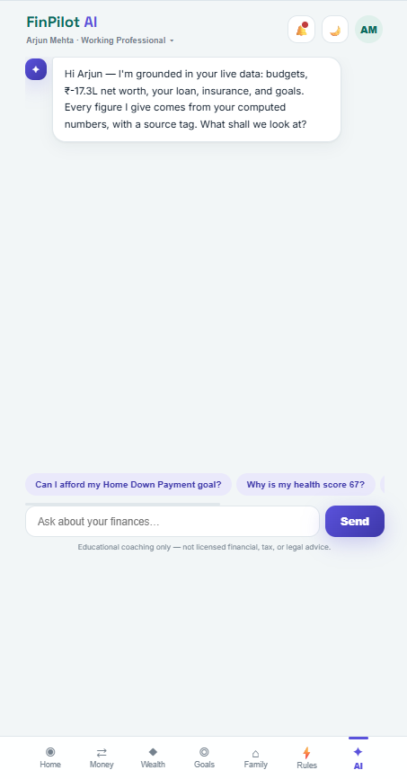

Overview
FinPilot AI is a personal financial intelligence platform that aggregates accounts, cards, investments, loans, and insurance into one place, then layers an AI coaching assistant on top of that aggregated view. Before any production code, the product was specified end-to-end across six companion documents: a 501-feature inventory spanning 35 modules, a PRD with an enterprise addendum (pricing, compliance, governance), a 32-ticket backlog with full acceptance criteria, a multi-agent AI design document, screen-level UX documentation, and a testing spec covering everything from hallucination testing to chaos engineering. A cross-document audit traces every feature ID through all six layers. The live link points to a /prototype build used for UX validation — the project is honestly scoped as specification and architecture in progress, not a finished production app.
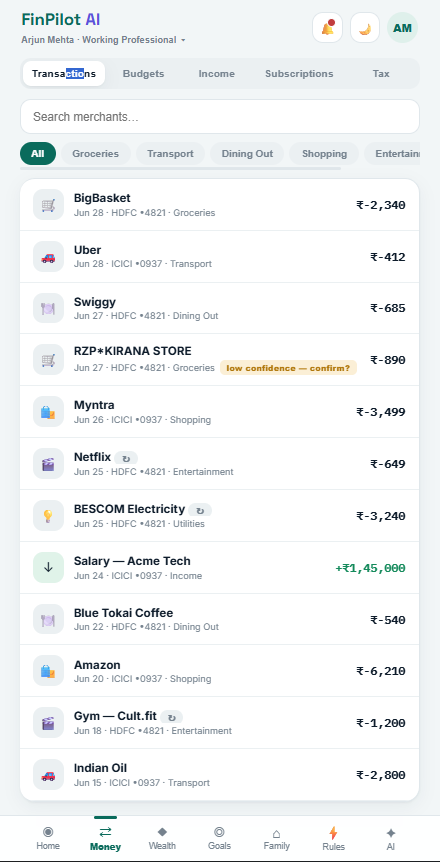
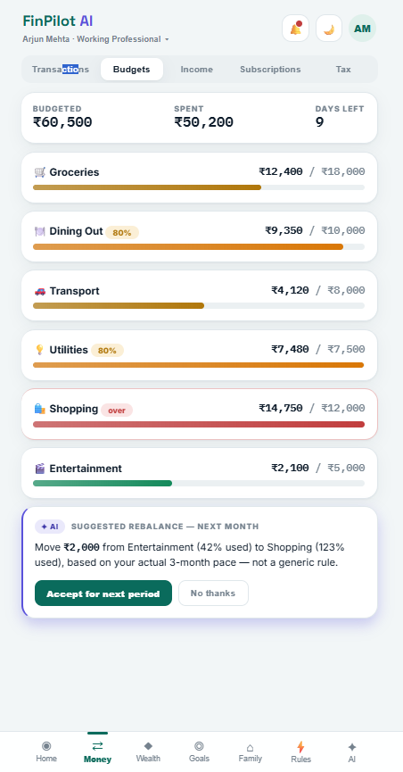
The Challenge
The central risk in any "AI financial coach" product is hallucination: an LLM confidently stating a wrong balance, a wrong interest calculation, or made-up advice based on incomplete context is far worse than the assistant simply not answering. The system needed a way to let an LLM reason conversationally about a user's finances while guaranteeing that every number it states is pulled from a verified, deterministic calculation rather than generated by the model itself. The second challenge was scale of definition: making 35 modules — from expense tracking to household sharing to peer benchmarking — behave as one coherent product required a traceability system where every ticket, screen, and test case maps back to a stable feature ID.
The Engineering
The architecture deliberately splits responsibilities across services instead of putting everything behind one LLM call. A Java/Spring Boot 3 service owns deterministic financial computation — balances, aggregation, XIRR, amortization, tax-regime comparison, the versioned Financial Health Score — backed by PostgreSQL. A separate Python/FastAPI service handles the AI reasoning layer, orchestrating a multi-agent pipeline with LangGraph (planner, retrieval, calculation, coaching, and reflection agents, with compliance and risk agents specified in the design docs) and using Qdrant for vector retrieval over financial context, with OpenAI/Gemini as the underlying model providers. The AI layer queries the deterministic layer for facts rather than inventing them, so its output is grounded in real computed data — and every response carries citations and a confidence indicator.
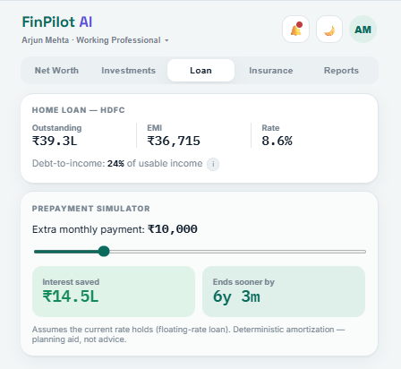
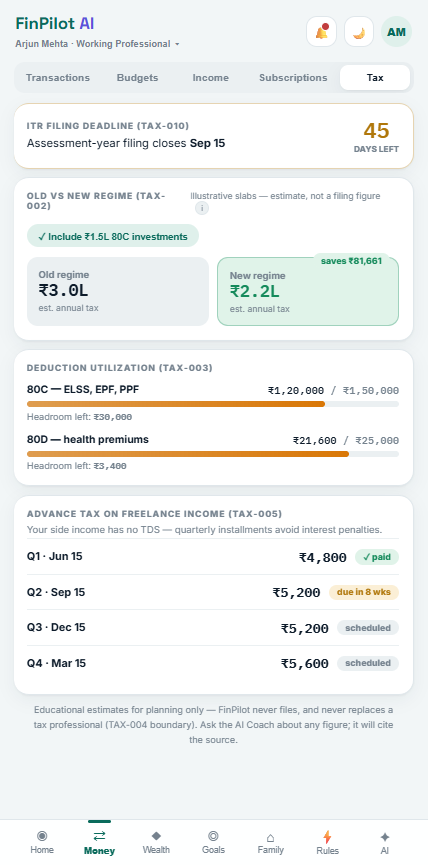

The spec enforces this in writing: a global business rule states no numeric value shown to the user may originate from the language model. Others mandate scoped, time-boxed, revocable consent; cohort-based anonymized benchmarking with a minimum-cohort privacy floor that fails closed; and versioned score formulas so historical figures are never silently recalculated.
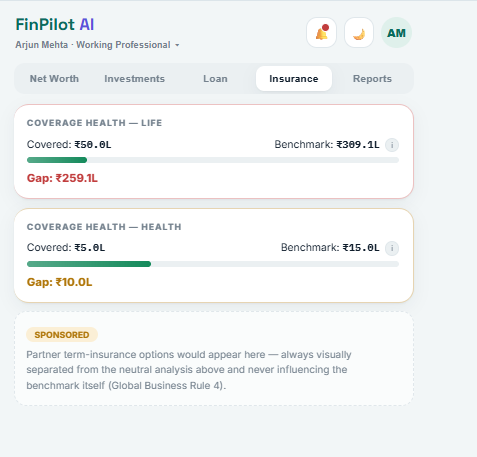
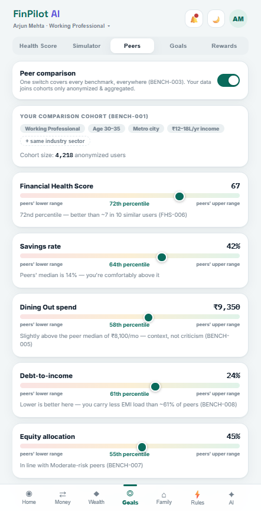
Infrastructure-wise, the project is set up with Docker, RabbitMQ for async messaging between services, and MinIO for object storage, with GitHub Actions scaffolded for CI — reflecting a multi-service system designed to scale past a single monolith, even though it's still early.
System Architecture
Deterministic computation and AI reasoning kept as separate services — the AI explains numbers, it never produces them.
Tech Stack
Key Features
- Financial aggregation
Accounts, cards, investments, loans, and insurance unified into one consent-scoped view.
- AI coaching layer
Conversational assistant grounded in deterministic, non-hallucinated calculations, with cited sources and visible confidence.
- Multi-agent architecture
Planner, retrieval, calculation, coaching, and reflection agents orchestrated with LangGraph rather than single-shot prompting.
- Deterministic engines
XIRR, loan amortization/prepayment simulation, dual tax-regime comparison, and a versioned six-pillar Financial Health Score.
- Privacy-first benchmarking
Anonymized cohort comparison that fails closed below a 50-user privacy floor.
- Household & automation
Per-category consent-based sharing and a WHEN/THEN rules engine with conflict detection and a full audit log.
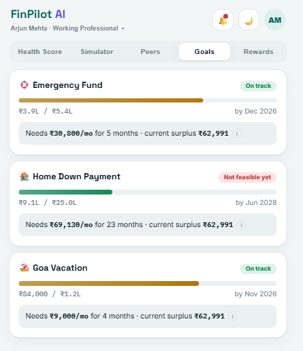
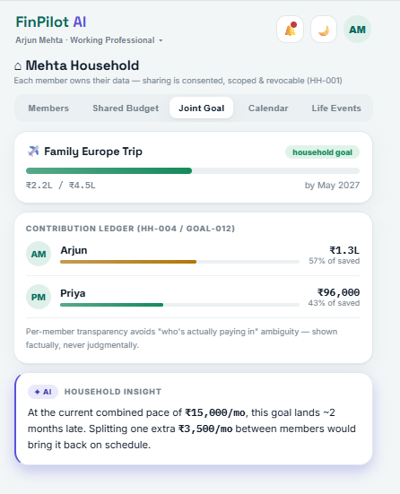
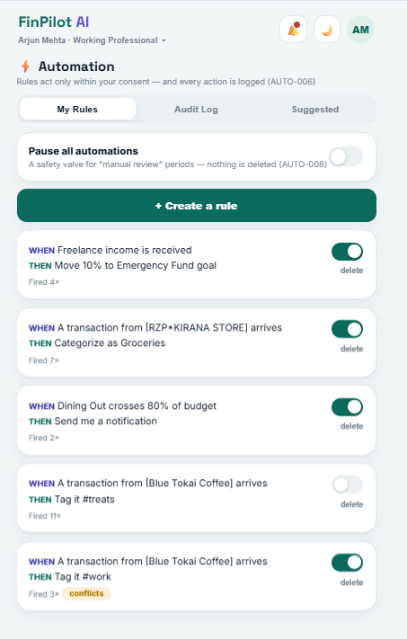
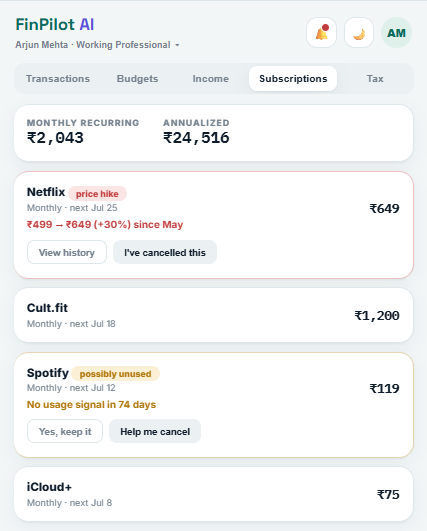
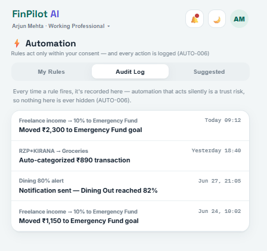
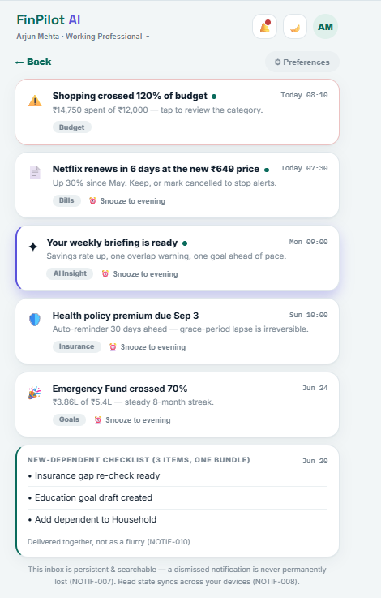
Performance
This project is intentionally not benchmarked yet — it's in the prototype/UX-validation stage, not production. The spec itself defines the targets: dashboard render under 2s P90, AI first-token under 3s P90, 99.9% availability for deterministic reads with graceful degradation when the AI layer is down. The architectural decision that most affects future performance is the separation of deterministic computation from AI reasoning: compute-heavy financial calculations don't round-trip through an LLM, which keeps the expensive AI calls scoped to reasoning rather than arithmetic.
Results
A live prototype build is deployed (linked above) for UX validation of the coaching flow and financial dashboard UI, covering the full Wave 1 scope — onboarding, consent, expense/budget, wealth, goals, benchmarking, household, rules, and AI coach — plus an admin portal with AI evaluation gates and incident tooling. The documentation set was closed with a cross-document consistency audit scoring it 88/100 startup-ready, with every feature traced from inventory through PRD, backlog, AI design, UX, and testing. The full multi-service backend — Spring Boot, FastAPI/LangGraph, RabbitMQ, MinIO — exists as scaffolding and is being built out epic-by-epic; the project is presented honestly as early-stage rather than as a finished product.
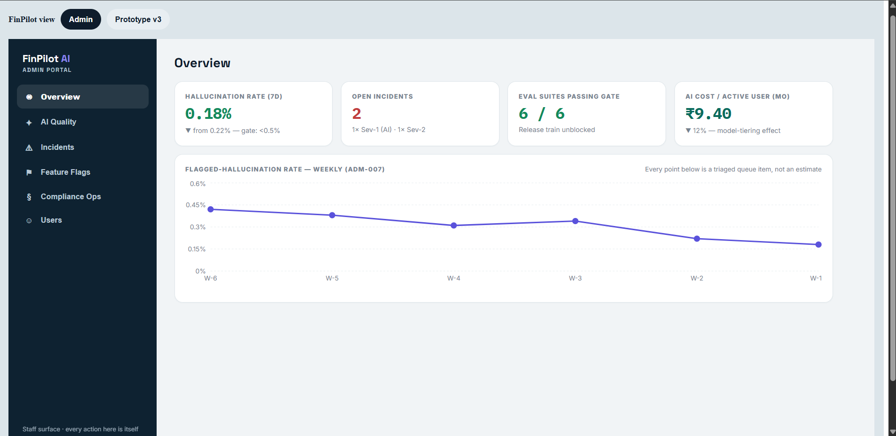
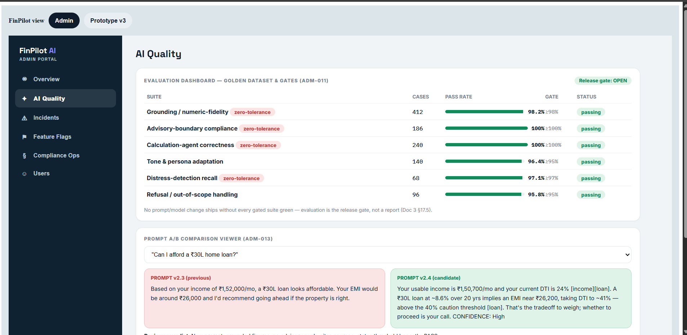
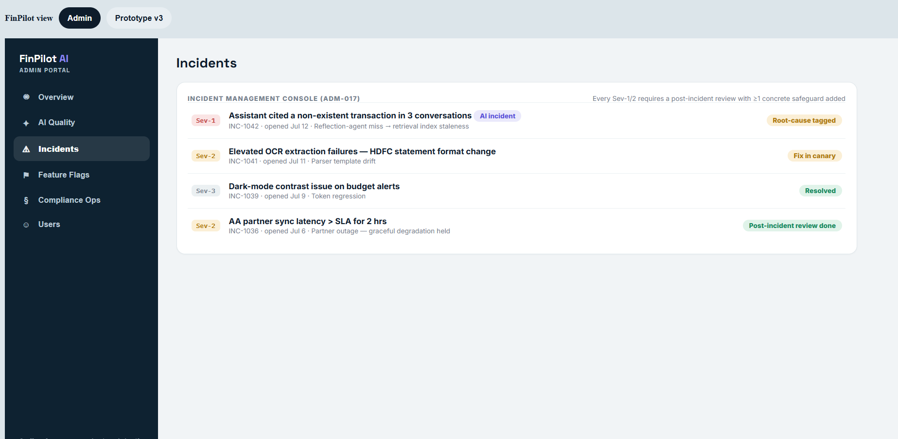
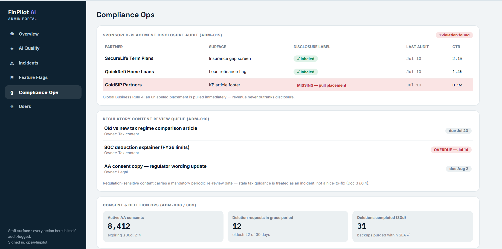
Lessons
Designing the AI/deterministic split before writing much code forced an early answer to "what can this system say for certain vs. what is it guessing" — a distinction that's easy to blur once an LLM is in the loop and hard to retrofit afterward. Writing the full specification before implementation had a similar effect: a cross-document audit caught gaps (a fully-designed pricing UX with no feature ID or acceptance criteria behind it) that would otherwise have surfaced mid-build as engineering ambiguity. Scoping the project publicly as a prototype rather than overstating its completeness was also a deliberate choice, matching the same "honest about scope" approach used across the other project write-ups here.